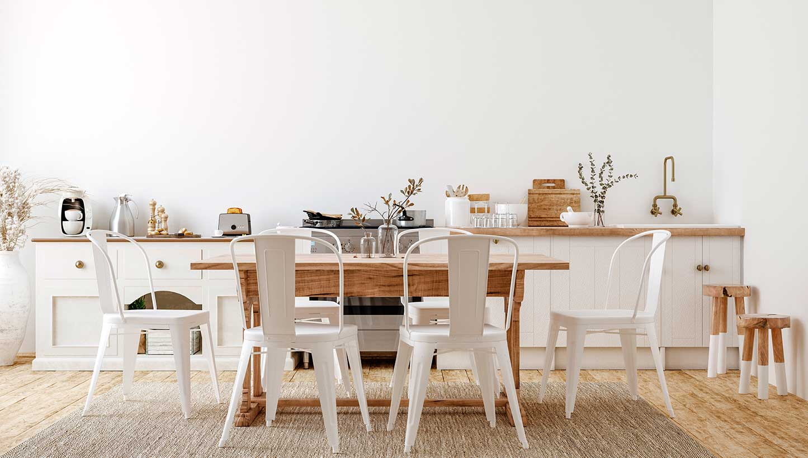
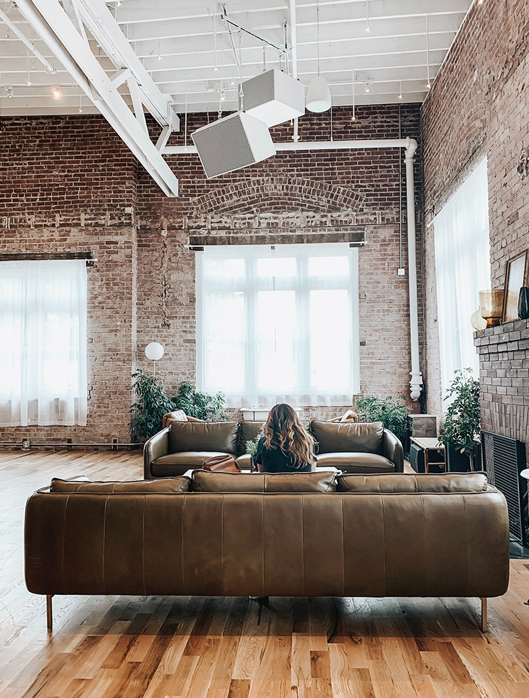
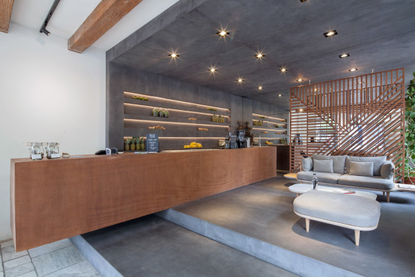
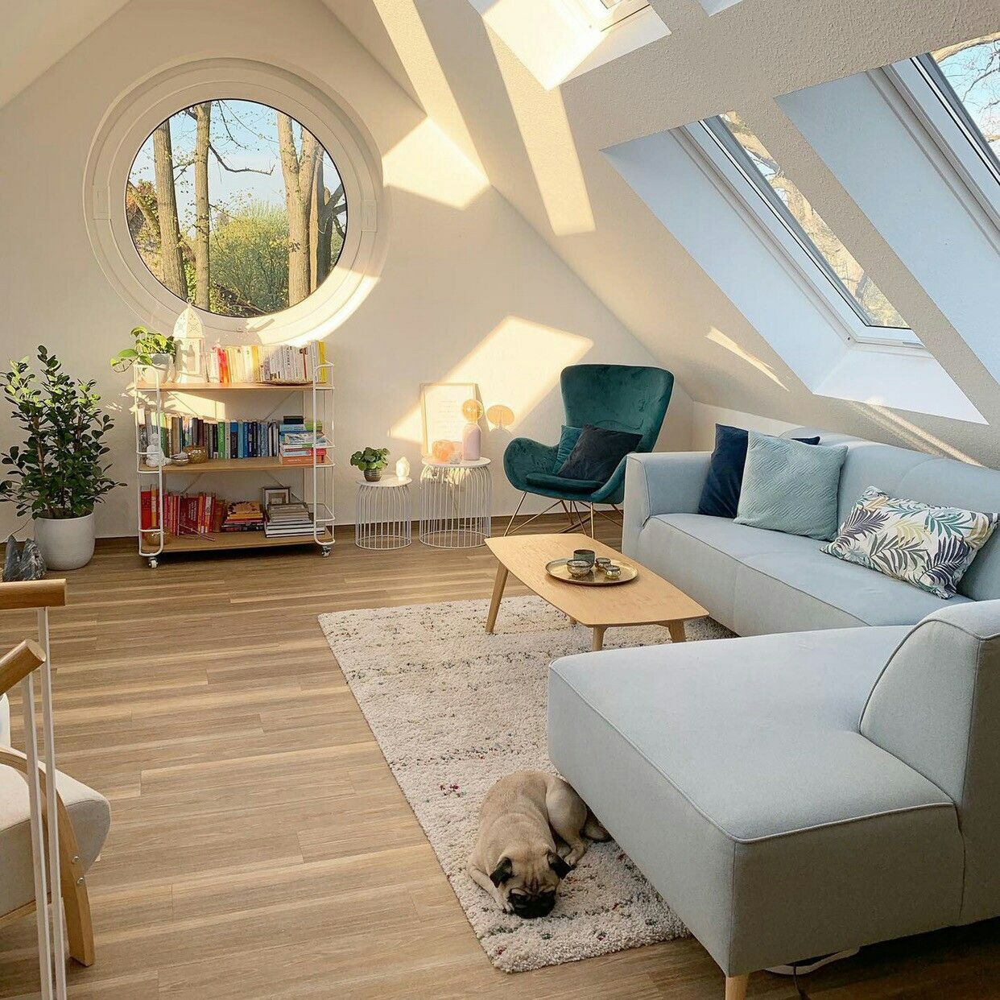

Diseño Nordico - Proyecto Manhattan
Estilo limpio y luminoso en el Proyecto Manhattan. Renovacion de cocina en casa de fin de semana en el centro de este barrio Neoyorkino. Los propietarios buscaron crear un espacio calido para el ambiente. Se utilizó principalmente una paleta de colores neutras, haciendo foco en los colores terra, con objetos decorativos funcionales y de estilo campestre moderno.
- Metros cuadrados refaccionados: 52 mts2
- Tiempo de remodelacion: 2 semanas
- Presupuesto: ilimitado

Diseño Industrial - Proyecto Valencia
Remodelacion del Chalet ubicado en Valencia, España. El proyecto tomó seis semanas en las cuales se implementaron tecnicas eco-friendly utilizando materiales con acabados naturales, hierros forjado, hormigon y madera rustica. Para este proyecto, se solicitó mantener las paredes originales de la construcción ya que poseía un valor sentimental importante para la dueña. Presentó un desafio con resultados perfectos al combinar lo nuevo y moderno con lo antiguo y rústico.
- Metros cuadrados refaccionados: 120 mts2
- Tiempo de remodelacion: 6 semanas
- Presupuesto: 35.000 euros

Renovacion Café Leonie - Copenhague
Remodelacion de la Cafetería-Restó más conocida de la hermosa ciudad Dinamarquesa. El proyecto tomó cinco semanas y se realizó una renovación integral del salón principal. Estructuralmente se realizaron modificaciones con el fin de ampliar el ambiente y se incorporaron elementos que mantuviesen la estética propia de la reconocida cadena.
- Metros cuadrados refaccionados: 90 mts2
- Tiempo de remodelacion: 5 semanas
- Presupuesto: ilimitado

Renovacion Altillo - Proyecto Málaga
Remodelación de espacio en común. En este proyecto, los dueños quisieron aprovechar el sitio menos utilizado de la casa para crear un espacio de relajación y entretenimiento. En escasos metros cuadrados se logró sumar un sitio con mucha iluminación natural y vistas hacia la hermosa ciudad española
- Metros cuadrados refaccionados: 42 mts2
- Tiempo de remodelacion: 3 semanas
- Presupuesto: ilimitado